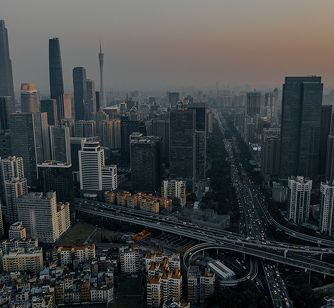
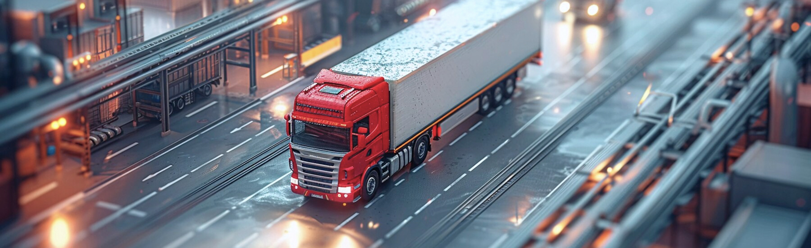

Перевозка комбайна с жаткой возможна для некоторых моделей картофелеуборочных или свеклоуборочных комбайнов, у которых габариты не выходят за допустимые пределы ширины автопоезда.
Оставьте заявку, и мы перезвоним вам в течение 5 минут
Нажимая кнопку «Рассчитать» вы даете согласие на обработку персональных данных
Об услуге
Основная сложность связана с конструкцией комбайна. Жатка — механизм для уборки урожая — чаще всего имеет довольно большие габариты, до 7 м. Как правило, это жатки для зерновых. В этом случае для перевозки её придётся отсоединить от комбайна, установить вдоль трала и погрузочной площадки или везти отдельной машиной.
Основная сложность связана с конструкцией комбайна. Жатка — механизм для уборки урожая — чаще всего имеет довольно большие габариты, до 7 м. Как правило, это жатки для зерновых. В этом случае для перевозки её придётся отсоединить от комбайна, установить вдоль трала и погрузочной площадки или везти отдельной машиной.
Виды грузовых перевозок из Китая
Тарифы на доставку грузов
Основная сложность связана с конструкцией комбайна. Жатка — механизм для уборки урожая — чаще всего имеет довольно большие габариты, до 7 м. Как правило, это жатки для зерновых. В этом случае для перевозки её придётся отсоединить от комбайна, установить вдоль трала и погрузочной площадки или везти отдельной машиной.
Баржа + авто
Цена от
105$ / тонна
Идеально подходит для среднетяжелых грузов, сосредоточенных в северных районах Китая
до 38 тонн
17-45 дней
Страхование груза и погрузочно-разгрузочные работы включены
Баржа + авто
Цена от
105$ / тонна
Идеально подходит для среднетяжелых грузов, сосредоточенных в северных районах Китая
до 38 тонн
17-45 дней
Страхование груза и погрузочно-разгрузочные работы включены
Баржа + авто
Цена от
105$ / тонна
Идеально подходит для среднетяжелых грузов, сосредоточенных в северных районах Китая
до 38 тонн
17-45 дней
Страхование груза и погрузочно-разгрузочные работы включены
Города, из которых мы возим грузы
Пекин

Гуанчжоу

Шанхай
Ухань
Пекин
Пекин
Гуанчжоу
Шанхай
Ухань
Пекин
Особенности грузоперевозок из Китая
Основная сложность связана с конструкцией комбайна. Жатка — механизм для уборки урожая — чаще всего имеет довольно большие габариты, до 7 м. Как правило, это жатки для зерновых. В этом случае для перевозки её придётся отсоединить от комбайна, установить вдоль трала и погрузочной площадки или везти отдельной машиной.
- Основная сложность связана с конструкцией комбайна. Жатка — механизм для уборки урожая — чаще всего имеет довольно большие габариты, до 7 м. Как правило, это жатки для зерновых. В этом случае для перевозки её придётся отсоединить от комбайна, установить вдоль трала и погрузочной площадки или везти отдельной машиной.
- Основная сложность связана с конструкцией комбайна. Жатка — механизм для уборки урожая — чаще всего имеет довольно большие габариты, до 7 м. Как правило, это жатки для зерновых. В этом случае для перевозки её придётся отсоединить от комбайна, установить вдоль трала и погрузочной площадки или везти отдельной машиной.
- Основная сложность связана с конструкцией комбайна. Жатка — механизм для уборки урожая — чаще всего имеет довольно большие габариты, до 7 м. Как правило, это жатки для зерновых. В этом случае для перевозки её придётся отсоединить от комбайна, установить вдоль трала и погрузочной площадки или везти отдельной машиной.

Кейсы
Перейти ко всем
Трубопровод на катушках 75 шт.
Габариты
12000 х 3000 х 3000
Вес
27000 кг
Откуда
Находка, боец Кузнецова
Куда
п. Яблоновский, Адыгея
Трубопровод на катушках 75 шт.
Габариты
12000 х 3000 х 3000
Вес
27000 кг
Откуда
Находка, боец Кузнецова
Куда
п. Яблоновский, Адыгея
Трубопровод на катушках 75 шт.
Габариты
12000 х 3000 х 3000
Вес
27000 кг
Откуда
Находка, боец Кузнецова
Куда
п. Яблоновский, Адыгея
Наши преимущества
Преимущества сотрудничества с нами
Основная сложность связана с конструкцией комбайна. Жатка — механизм для уборки урожая — чаще всего имеет довольно большие габариты, до 7 м. Как правило, это жатки для зерновых. В этом случае для перевозки её придётся отсоединить от комбайна, установить вдоль трала и погрузочной площадки или везти отдельной машиной.

Разрабатываем уникальные решения
индивидуально под каждого клиента
Поддерживаем клиентов
в процессе выполнения заказа 24/7
Отвечаем за сохранность грузов
на всем протяжении маршрута
Составляем многозадачные алгоритмы доставки
любой сложности
Применяем экспресс-доставку пакета документов
для клиента в любую точку мира
Сопровождаем каждую перевозку разработкой проекта
инженерами-экспертами
Организуем срочную подачу транспорта
день в день
Круглосуточная система мониторинга
транспортного средства и груза
Контроль качества на каждом этапе
руководством компании
Основные этапы доставки
Основная сложность связана с конструкцией комбайна. Жатка — механизм для уборки урожая — чаще всего имеет довольно большие габариты, до 7 м. Как правило, это жатки для зерновых. В этом случае для перевозки её придётся отсоединить от комбайна, установить вдоль трала и погрузочной площадки или везти отдельной машиной.
01
Планирование транспортировки
02
Забор отправления
03
Экспортное таможенное оформление
04
Перевозка продукции и прохождение границ
05
Таможенное оформление в стране получателя
06
Транспортировка до склада получателя
Разновидности перевозимых грузов
Основная сложность связана с конструкцией комбайна. Жатка — механизм для уборки урожая — чаще всего имеет довольно большие габариты, до 7 м. Как правило, это жатки для зерновых. В этом случае для перевозки её придётся отсоединить от комбайна, установить вдоль трала и погрузочной площадки или везти отдельной машиной.
Она не запрещена к транспортировке
Товар разрешен к ввозу на территорию нашей страны
Наличие разрешительной документации
Соответствие документации фактическим сведениям о товаре
Возможность перемещать продукцию выбранным видом транспорта
Основная сложность связана с конструкцией комбайна. Жатка — механизм для уборки урожая — чаще всего имеет довольно большие габариты:
Насыпные
Навалочные
Наливные
Штучные
Опасные
Негабаритные
Отзывы
Наши клиенты
Официальные документы и разрешения
Основная сложность связана с конструкцией комбайна. Жатка — механизм для уборки урожая — чаще всего имеет довольно большие габариты, до 7 м. Как правило, это жатки для зерновых. В этом случае для перевозки её придётся отсоединить от комбайна, установить вдоль трала и погрузочной площадки или везти отдельной машиной.